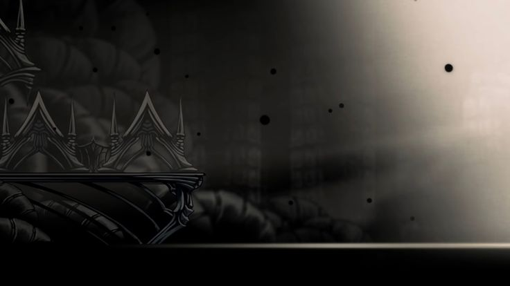

Кристальный пик

Crystal Peak (Кристальный Пик) — шахтерская зона, заполненная розовыми кристаллами и врагами, способными излучать мощные лазеры. Это место тесно связано с индустриальной стороной королевства. Игроку предстоят сложные платформенные участки, а враги здесь включают кристальных стражей и гигантских жуков, работающих на шахтах.
Зеленая тропа

Greenpath (Зелёный Путь) — густо заросшая область с мхом и экзотической флорой и фауной. Здесь обитают необычные враги, такие как вериданты и скриттеры, а также игрок впервые встречает персонажа Hornet. В Greenpath особое внимание уделяется платформингу и уклонению от врагов в густых джунглях. Моя любимая локация. Люблю ее за атмосферу и музыку
Город слез

City of Tears (Город слёз) — огромный и величественный город в центре Холлоунеста, постоянно окутанный дождем, который происходит из-за плача зараженных сущностей. Здесь обитают как обычные горожане, так и мощные враги, такие как стражи. В Городе Слёз игрок получает доступ к кузнецу, который помогает улучшить оружие, и сталкивается с ключевыми боссами, такими как Душа Хранитель.
Белый дворец

White Palace (Белый Дворец) — скрытая и очень сложная зона, являющаяся воспоминанием о былом величии Холлоунеста. Дворец представляет собой серию сложных платформенных испытаний, где игроку нужно преодолевать смертельные пилы и шипы. Здесь находится сердце истории короля Холлоунеста и его решений, приведших к падению королевства.
Бездна
The Abyss (Бездна) — самая темная и таинственная область в игре, расположенная в самой глубине Холлоунеста. Это место связано с древними секретами о происхождении рыцаря и других сосудов, подобных ему. Здесь обитают темные существа, и игрок получает ключевые знания о природе инфекции и своей роли в этом мире.
Грибные пустоши

Fungal Wastes (Грибные Пустоши) — область, покрытая грибами и токсичными спорами. Это пещеристая зона с множеством грибных врагов, таких как шрумы и гигантские грибные воины. Игрок также сталкивается с NPC Легионером (Leg Eater) и Трумным Шамом. Грибные Пустоши соединены с несколькими другими локациями, такими как Город Слёз и Сады Королевы.
Путешествие по королевству
 s
s